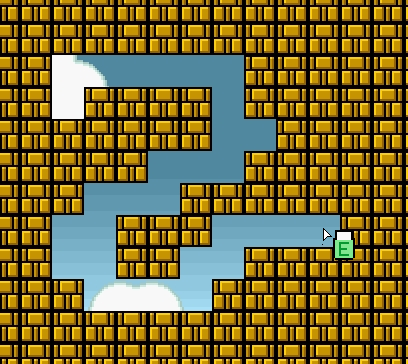
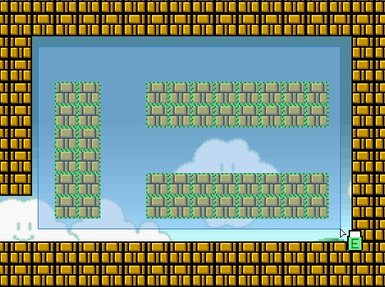

You can remove unnecessary items from map. You have three ways for made them:
By context menu
You can remove item group by context menu. Will be removed items only of same type which have item which was clicked for execute context menu.
For swithc into erasing mode, select the Rubber tool
" ".
And cursor will be switched into rubber:
".
And cursor will be switched into rubber:
 .
.
Click on the item for remove them. You can hold mouse button and remove items under mouse pointer by its movement, but if you start movement from item. If you start mouse movement from empty space, you will remove item by rectangle range. When you release mouse button all items inside drawed rectangle will be removed. Use this tool correctly!
Erasing by brush (Activating if you start holded movement from any item)

Erasing by rectangle (activating if you start pressed mouse movement from empty space)

You also can remove selected items by DEL key.
Copyright © 2014-2015 Platformer Game Engine by Wohlstand project. All rights reserved.